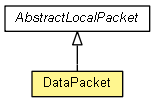

org.waarp.openr66.protocol.localhandler.packet
Class DataPacket
java.lang.Object
 org.waarp.openr66.protocol.localhandler.packet.AbstractLocalPacket
org.waarp.openr66.protocol.localhandler.packet.DataPacket
org.waarp.openr66.protocol.localhandler.packet.AbstractLocalPacket
org.waarp.openr66.protocol.localhandler.packet.DataPacket
public class DataPacket
- extends AbstractLocalPacket

Data packet
header = packetRank middle = data
- Author:
- frederic bregier
DataPacket
public DataPacket(int packetRank,
ChannelBuffer data,
ChannelBuffer key)
- Parameters:
packetRank - data - key -
createFromBuffer
public static DataPacket createFromBuffer(int headerLength,
int middleLength,
int endLength,
ChannelBuffer buf)
throws OpenR66ProtocolPacketException
- Parameters:
headerLength - middleLength - endLength - buf -
- Returns:
- the new DataPacket from buffer
- Throws:
OpenR66ProtocolPacketException
createEnd
public void createEnd()
throws OpenR66ProtocolPacketException
- Description copied from class:
AbstractLocalPacket
- Prepare the End buffer
- Specified by:
createEnd in class AbstractLocalPacket
- Throws:
OpenR66ProtocolPacketException
createHeader
public void createHeader()
throws OpenR66ProtocolPacketException
- Description copied from class:
AbstractLocalPacket
- Prepare the Header buffer
- Specified by:
createHeader in class AbstractLocalPacket
- Throws:
OpenR66ProtocolPacketException
createMiddle
public void createMiddle()
throws OpenR66ProtocolPacketException
- Description copied from class:
AbstractLocalPacket
- Prepare the Middle buffer
- Specified by:
createMiddle in class AbstractLocalPacket
- Throws:
OpenR66ProtocolPacketException
getType
public byte getType()
- Specified by:
getType in class AbstractLocalPacket
- Returns:
- the type of Packet
toString
public String toString()
- Specified by:
toString in class AbstractLocalPacket
getPacketRank
public int getPacketRank()
- Returns:
- the packetRank
getLengthPacket
public int getLengthPacket()
- Returns:
- the lengthPacket
getData
public ChannelBuffer getData()
- Returns:
- the data
getKey
public ChannelBuffer getKey()
- Returns:
- the key
isKeyValid
public boolean isKeyValid()
- Returns:
- True if the MD5 key is valid (or no key is set)
Copyright © 2009-2012 Waarp. All Rights Reserved.